The Bellagio's mini-me: a dance of water fountains to the beat of any chosen
musical piece and is highlighted by LEDs. The height of the water and the
intensity or color of the LEDs is determined by the frequency/pitch of the
music. Visualize the Invisible.
Water stream just behind the LED strip to meet in the center.
Progress (Pictures only)
Stage 3
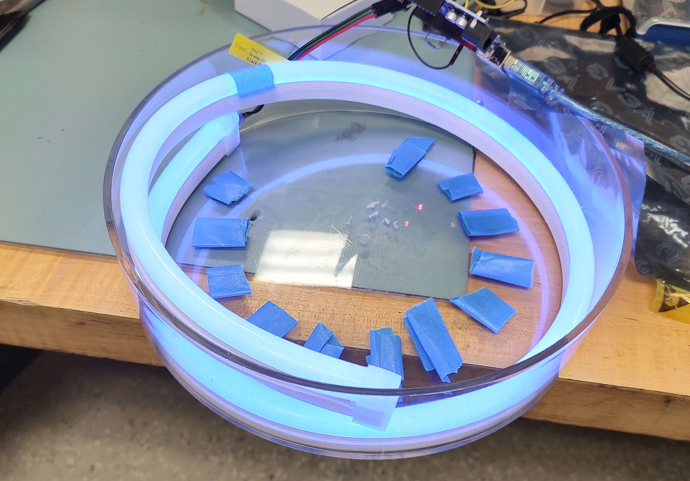
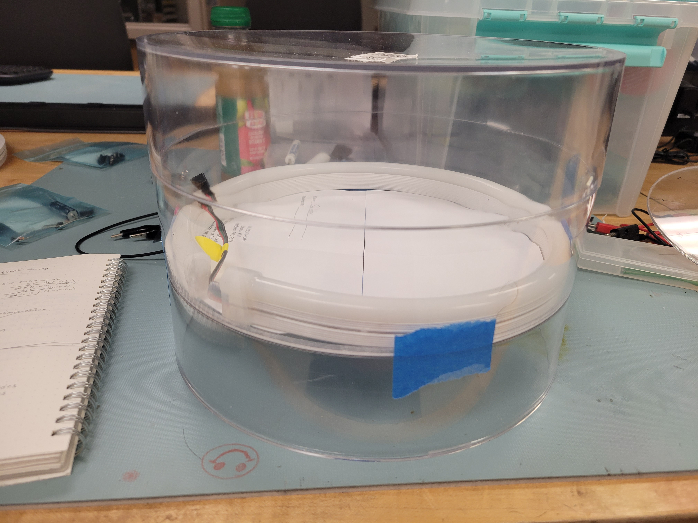
Stage 2
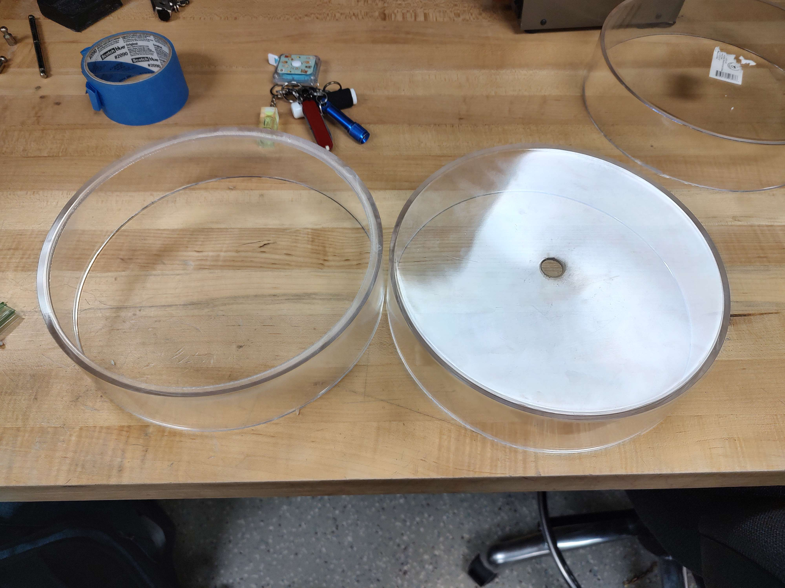
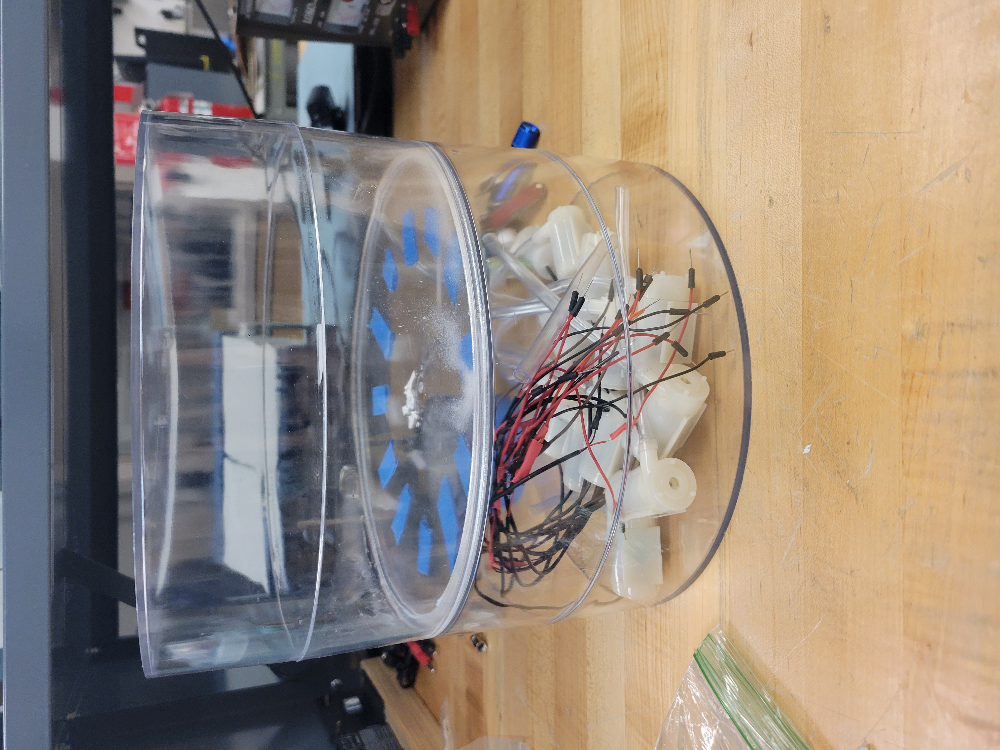
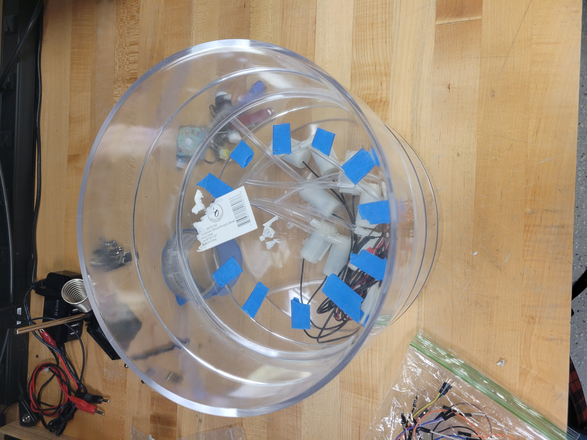
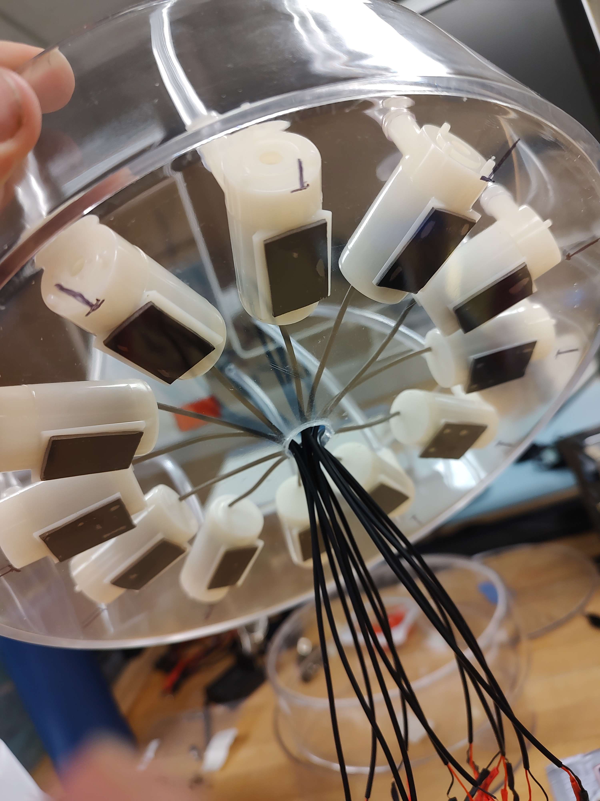
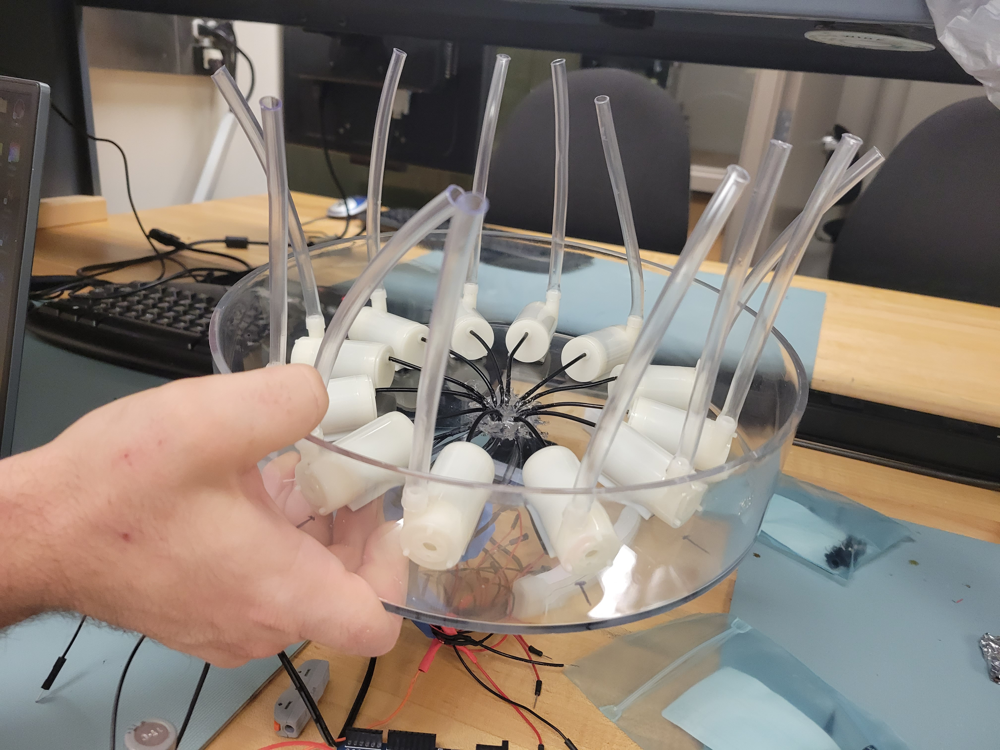
Stage 1
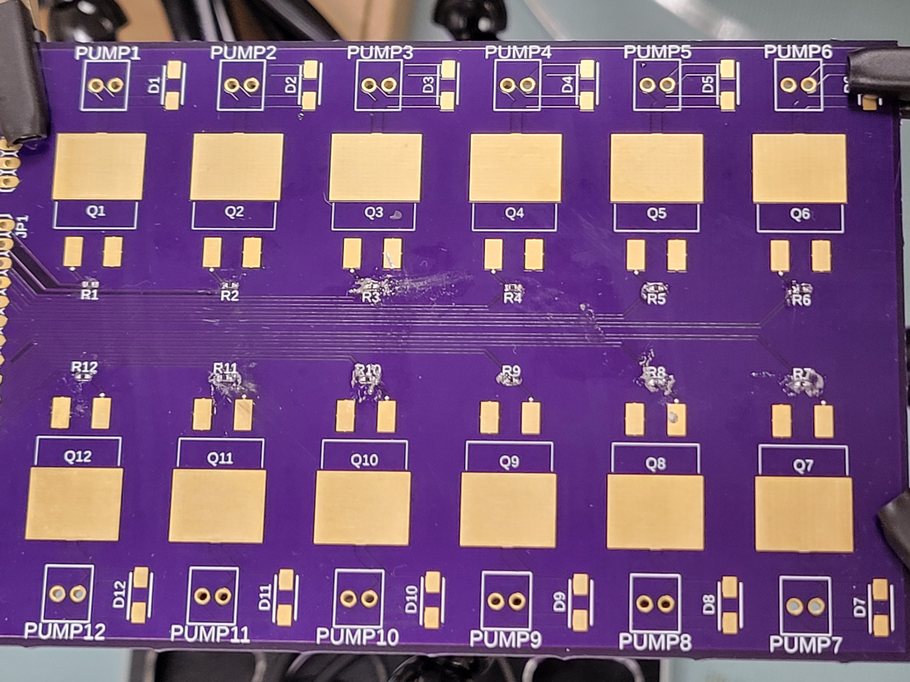
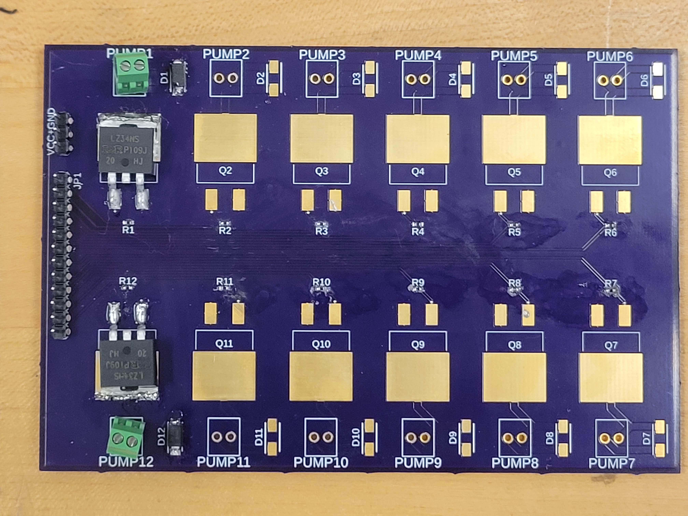
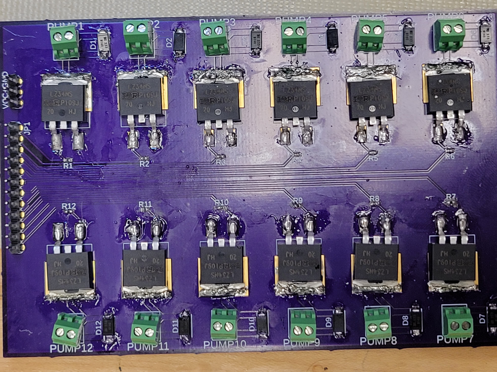
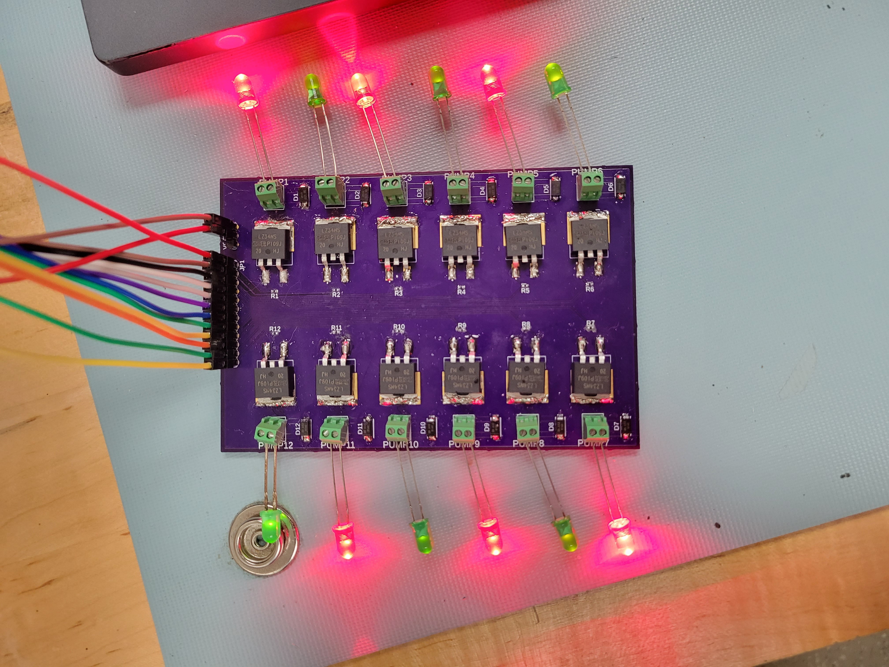
Prototype
Prototype demonstrates the ability to control the water flow using a potentiometer on a single pump. The circuit used to control a single pump is replicated many times to control multiple, so if a single pump works, the multiple should as well. The one thing to watch out for is how much power is needed to power the drivers and/or pumps.
Final Product Sketches
Side View/Cross-section
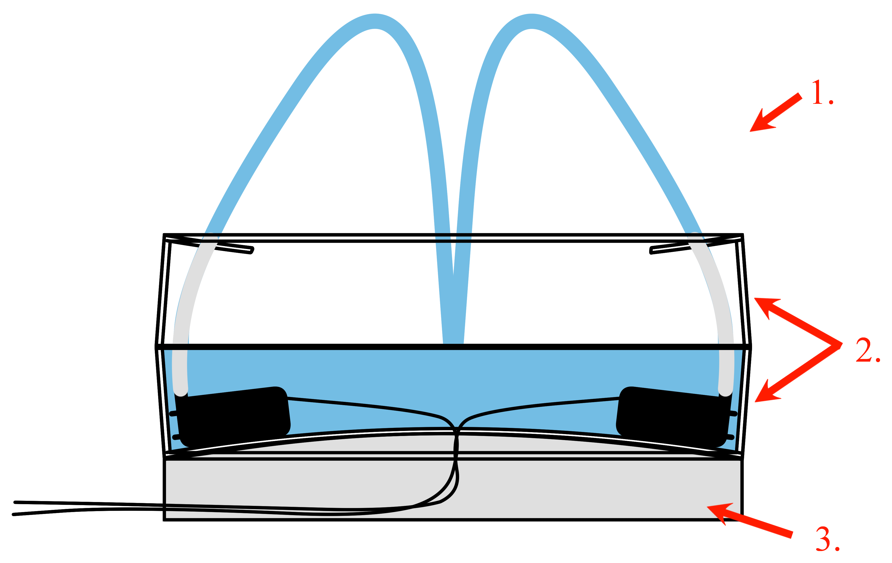
Either use the other 2 trays (with the bottom cut out) to encase the water or get some stiff vinyl and support the entire structure. Make sure to keep the top open or at least create a lid such that the contents of the bottom are accessible.
These two trays are the exact same. The top one is just flipped upside down with the bottom cut off except for about 1" from the edge.
Stand made from a few pieces of custom-cut acrylic to raise the encapsulation and allow wires to pass underneath.
Top-down View - Layer 1
Also referred to as the service box, this is the area where all the circuits live. The image does not show everything - it only shows the part that is connected to the project. What is missing are the LED driver, input, and speakers. To be added as the project continues.
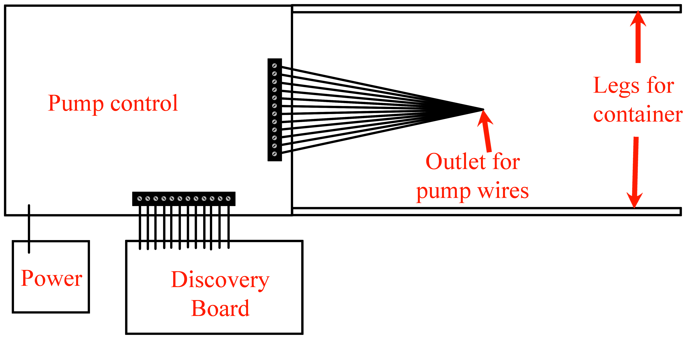
Top-down View - Layer 2
Also referred to as the tank. Area where the water is filled and the pumps placed.
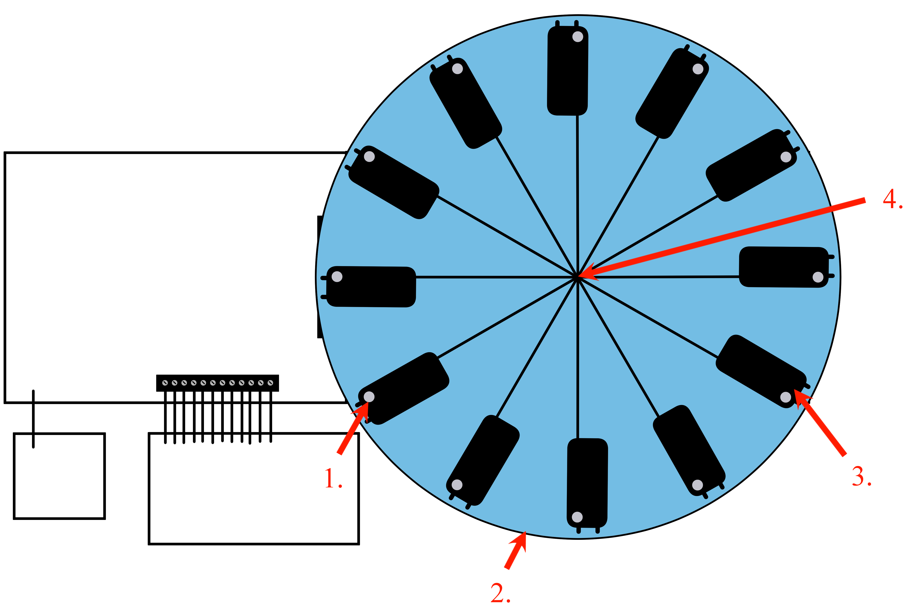
Outlet or spout of the pump. Tubes are connected to this to direct the water.
The bottom of the contianer is slightly smaller than its opening... If all 4 trays are used in the building of the encapsulation, the final look will not be straight.
The pumps may need some adhesive to stay in the same spot. The prototype demo, however, has shown that the pump stays fairly well in place.
Right here is a small hole that is just barely big enough to let the pump wires through. It will be filled with waterproof glue/sealant afterwards to make sure the water stays in the tank.
Top-down View - Layer 3
The stage. Here is where the focus of the project is, the water and light dance. The sketch mainly shows the area where the tubes protrude from underneath. Missing from the sketch is the LED strip which, for now, will be lined around the edge of the stage.
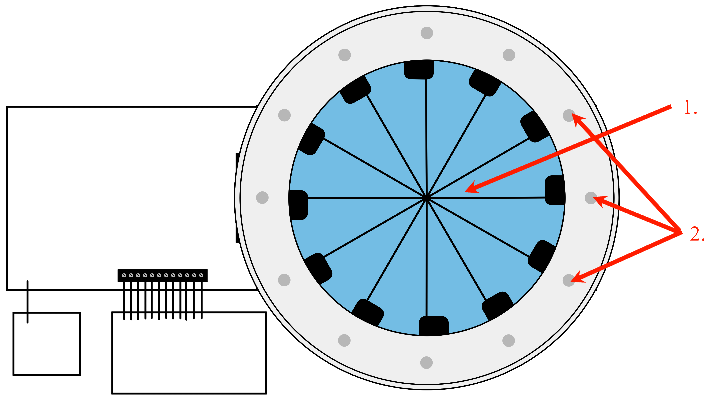
Open area where the water falls through and back down into the tank to be reused.
These are the openings for the tubes to protrude and be glued into place. They are placed slightly more inward than the pump spouts to give an arc to the water column. They will need to be adjusted such that the water columns all meet in the center when every pump is operating at max.